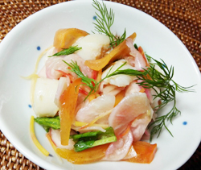

3色にんじんと柿とホタテのサラダ
- 調理時間：15分
- （一人当たり）
- カロリー：178kcal
- たんぱく質：8.4g
- 脂質：0.5g
- 炭水化物：36.1g
- 塩分：1.4g


＜2人分＞
- ニンジン（黄色、紫、朱色）
- 各50g
- 柿
- 1/2個
- カブ（葉っぱも使用）
- 1個
- ホタテ貝柱（ボイル）
- 3～4個
- ・酢
- 大さじ3
- ・砂糖
- 大さじ2
- ・薄口しょうゆ
- 大さじ1
- ディル（飾り用）
- 少々
A


- ・ニンジンは細切り。
・カブは半月切り。カブの葉っぱは4㎝幅に切る。
・柿は短冊切り。
ニンジンとカブは各々、塩（分量外）を振り、水がでたら絞る。 - ホタテは食べやすい大きさに切る。
- Aの調味料を合わせ、三杯酢をつくる。
- ニンジン、柿、カブ、葉っぱ、ホタテを三杯酢で和えて、器にもりつけディルを飾る。
3色にんじんと柿とホタテのサラダ
五寸、金時、金美、パープルスティック・・・などなど。これはニンジンの品種です。最近は、定番のオレンジ色以外に、黄色や紫色もよく見かけるようになりました。
今回は3色のニンジンをサラダ仕立てに！紫色のパープルスティックに含まれるアントシアニンが酢に反応して、カブが少しピンク色に染まりました。
また、加熱によって色が大きく変化することもないので、黄色や紫色のニンジンポタージュなど、変化球のレシピも広がりそうです。味も色によって少しずつ異なりますので、それぞれを色んな調理法で楽しんでいただければと思います。